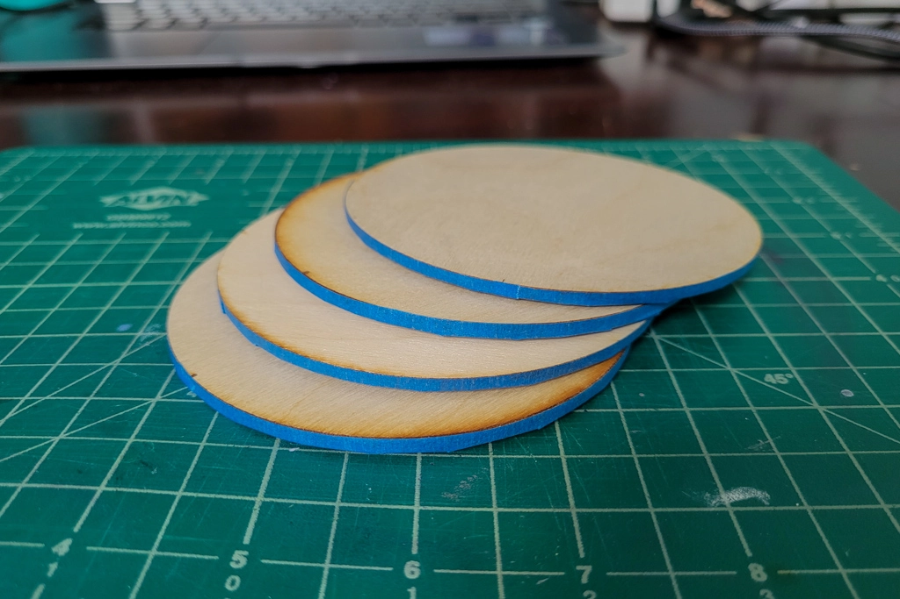
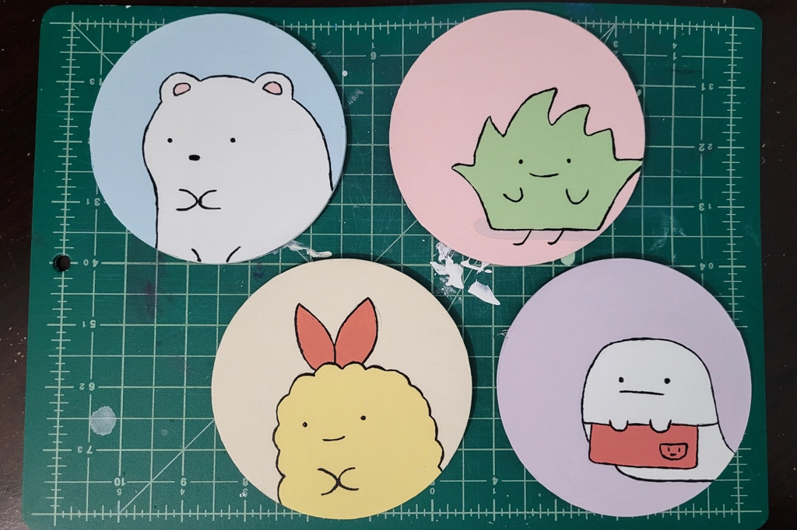
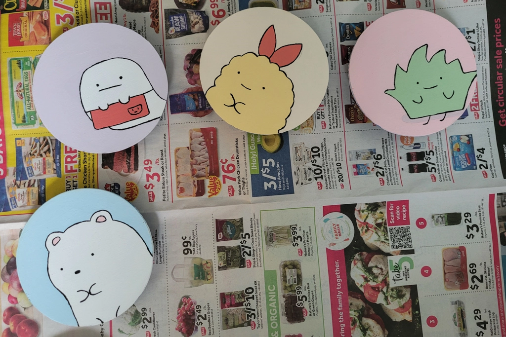
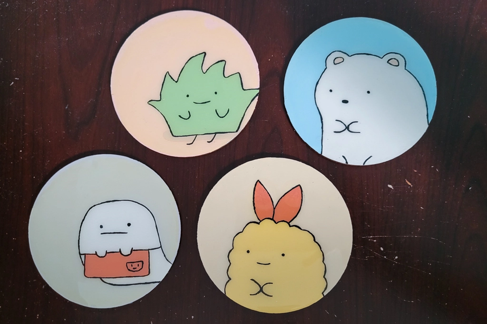
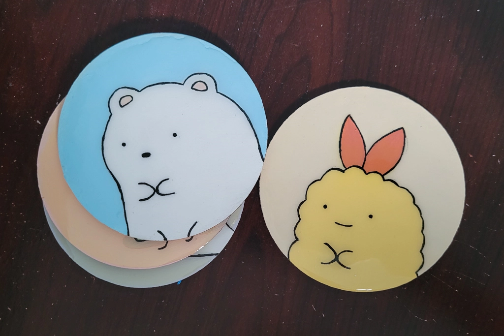
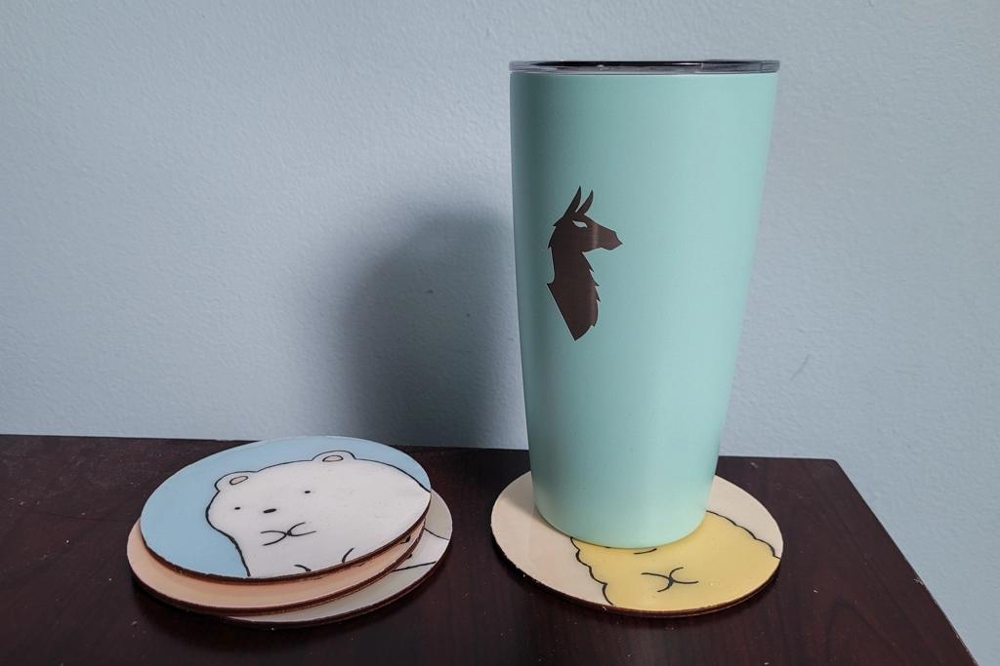

DIY Wood and Resin Coasters
Jul 25 - Written by Emily
Are you tired of getting stains on your furniture or damaging your tables with your favorite beverages? Well, we have a solution for you - coasters!
But, not just any coasters, custom, DIY coasters that can be made to fit any aesthetic. Since I had some extra circular pieces of wood laying around from an old project, I decided to turn them into something useful. But since most people don't just have small circular pieces of wood laying around their house, you can simply purchase some from your local craft store. In addition to the wood, you’ll need some acrylic paint and some resin to seal everything in and give your coasters that extra layer of protection.
Now that you have your supplies, the next step is simple, decide what design you want on your coasters and paint! I went through a few different ideas before settling on Sumikko Gurashi characters, but before I could begin painting, I taped down the sides of my coasters so that I couldn't get any paint or resin on there and when the final coasters were finished, you’d still have that nice wooden edge. With all my coasters prepped, I began with a base coat of paint. I either painted the entire coaster the background color or the color of the character I was doing. I did this to make life a little easier and not have to be so careful painting each part separately.
Once the base coat of paint was dry, I sketched out my design, and to make things even more accurate, I projected my designs onto the coasters and traced them onto the wood. Not everyone has access to a projector to do this step so another option is to print out your design, cut it out and trace from there. Or the simplest route is to freehand your design onto the wood and make it more original. After you have your design sketched out onto the wood, it's time to paint!
If you’re like me, you’ll probably end up mixing way too much paint than you already need so I suggest you start with a little bit and add more as you go because these coasters are smaller than you think and typically don't require a lot of paint.
Once your wood is all painted and is completely dry, we can get onto the resin portion. Having only worked with resin once before and not researching much prior to this process, there are some regrets. First off, follow the instructions closely on your particular type of resin and don't stir too aggressively as that can add lots of tiny air bubbles to your mixture that won't go away. Maybe it was just me but I accidentally stirred too much and ended up with air bubbles in my resin resulting in a less clear finish on my coasters.
Instead of creating a border for the coasters so that the resin is distributed evenly and in a thick layer, I just went ahead and poured the resin on top of my painted wood and brushed away the excess to have a thin coating. What appeared to be a solid idea began to backfire a little and the resin wouldnt sit on top of the coasters evenly and often left some spots uncovered. I don’t know enough about resin to know why this occurred but I can say that it's unfortunate as it means a second layer of resin will be needed if I want a clean and even coating. My guess is that the surface I was working on wasn't quite level so the resin would slowly drift to one side resulting in a slightly uneven coaster. So a tip from me to you, make sure your work surface is as level as possible!
Another thing that occurred in my coasters was the slight shift in colors. The pinks in my coasters now look orange through the resin and my purples look grey. I’m not sure why the colors shifted after applying the layer of resin so for anyone out there who knows why this happened, help a girl out! If I had known this was going to happen, I would have chosen my colors a little more carefully while painting so this is my warning to you, your paint colors may change after you apply the coat of resin!
After applying the resin to the best of my abilities and letting it dry for over 24 hours, we are down to the final step - removing the tape and applying an optional layer of felt to the bottom of the coasters. Removing the tape is always the most satisfying part of a project! Once removed, you can optionally glue a layer of felt to the bottom but if you choose to skip that step, congratulations, you have made your own wood and resin coasters! I chose to add a layer of felt to give my coasters a more polished feel but it is definitely not needed.
My completed coasters may not be exactly what I had envisioned but they are still quite cute and are definitely fully functional. Just don’t look too closely as there are some imperfections due to my poor resin skills but practice makes perfect so although these didn’t quite turn out right, my next ones will hopefully be better.